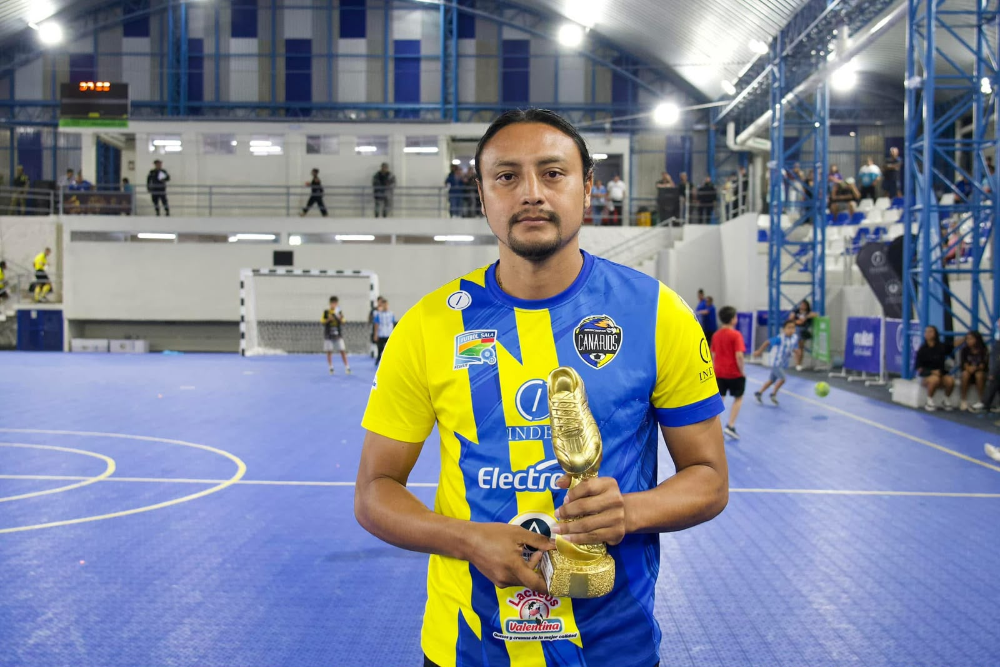

Un solo escudo. Una sola familia.
AD Canarios Futsal Ahuachapán nació con el propósito de impulsar el fútbol sala como una herramienta de formación, integración y desarrollo para la comunidad ahuachapaneca. Desde sus inicios, el club ha trabajado para brindar oportunidades a niños, jóvenes y adultos, promoviendo un entorno donde el deporte se convierte en un espacio para aprender, crecer y fortalecer valores. Desde 2017, la institución participa de forma constante en competencias oficiales de fútbol sala, representando con orgullo al departamento de Ahuachapán en las ramas masculina y femenina. A lo largo de este recorrido, el club ha consolidado una estructura deportiva y administrativa que le ha permitido crecer de manera organizada y convertirse en un referente del futsal en la zona occidental de El Salvador. Más allá de la competencia, AD Canarios cree en el deporte como un motor de transformación social. Cada entrenamiento, cada partido y cada proyecto reflejan el compromiso de formar personas íntegras bajo principios como la disciplina, el respeto, la responsabilidad, el trabajo en equipo y el compromiso social. Como el único representante del fútbol sala de la zona occidental en competencias nacionales, el club asume con orgullo la responsabilidad de llevar el nombre de Ahuachapán a cada escenario deportivo, fortaleciendo el vínculo con su afición, promoviendo alianzas con patrocinadores y trabajando constantemente por el crecimiento institucional. Hoy, AD Canarios Futsal Ahuachapán continúa construyendo su historia con la misma pasión que inspiró su creación: desarrollar el talento deportivo, representar dignamente a su comunidad y demostrar que, con esfuerzo, unión y compromiso, es posible alcanzar grandes objetivos dentro y fuera de la cancha.
Nuestro compromiso es ofrecer oportunidades para que niños, jóvenes y adultos puedan crecer dentro del fútbol, representando con orgullo nuestros colores.

Guillermo Galicia representa una de las páginas más importantes en la historia de AD Canarios Futsal Ahuachapán. Su talento, liderazgo y extraordinaria capacidad goleadora lo convirtieron en un referente del fútbol sala salvadoreño y en un orgullo para toda la afición canaria.
Defendiendo nuestros colores consiguió una hazaña histórica al proclamarse nueve veces campeón de goleo de manera consecutiva, consolidándose como uno de los máximos referentes del deporte nacional.
Además, estableció un récord al marcar más de 80 goles en un solo torneo, una cifra que permanece como una de las más impresionantes en la historia del fútbol sala salvadoreño.
"Su legado trasciende los goles. Guillermo Galicia representa el esfuerzo, la pasión y el orgullo de vestir los colores de AD Canarios y llevar el nombre de Ahuachapán a lo más alto."
Promover el futbol sala como herramienta de formación integral,fortaleciendo el desarrollo físico, social y humano de niños, jóvenes y adultos,ontribuyendo positivamente a la sociedad del municipio de Ahuachapán.
Ser una institución deportiva referente en el occidente del país, reconocida por su organización, impacto social y competitividad deportiva.
Temporada 2026
| # | Jugador | PJ | ⚽ Goles | 🎯 Asist. | 🟨 | 🟥 |
|---|---|---|---|---|---|---|
| 10 | Vladimir Batres | 0 | 0 | 0 | 0 | 0 |
| 6 | Alejandro Osorio | 0 | 0 | 0 | 0 | 0 |
| 7 | Guillermo Galicia | 0 | 0 | 0 | 0 | 0 |
| 11 | Jonathan Galicia | 0 | 0 | 0 | 0 | 0 |
| 14 | Fernando Mendoza | 0 | 0 | 0 | 0 | 0 |
| 19 | Carlos Artero | 0 | 0 | 0 | 0 | 0 |
| 9 | Daniel Hernández | 0 | 0 | 0 | 0 | 0 |
| 17 | Daniel Reynosa | 0 | 0 | 0 | 0 | 0 |
| 21 | Francisco Galicia | 0 | 0 | 0 | 0 | 0 |
| 4 | Alberto Méndez | 0 | 0 | 0 | 0 | 0 |
| 22 | Alex Laguan | 0 | 0 | 0 | 0 | 0 |
| 15 | José Vicente | 0 | 0 | 0 | 0 | 0 |
| 8 | Christopher Chiguila | 0 | 0 | 0 | 0 | 0 |
| 5 | José León | 0 | 0 | 0 | 0 | 0 |
| 23 | Jonathan Quiñónez | 0 | 0 | 0 | 0 | 0 |
| 21 | Aníbal Salazar | 0 | 0 | 0 | 0 | 0 |
| 12 | Rafael Ortiz | 0 | 0 | 0 | 0 | 0 |
| 1 | Mauricio Ayala | 0 | 0 | 0 | 0 | 0 |
| 20 | Carlos Rincan | 0 | 0 | 0 | 0 | 0 |
| 25 | Amílcar Nájera | 0 | 0 | 0 | 0 | 0 |
Trabajamos cada día para impulsar el talento deportivo de nuestra comunidad.
Contáctanos